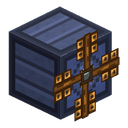
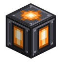
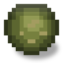
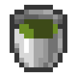
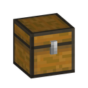

Todo el contenido
168 páginas

Generadores
12
Aerogenerador
El Aerogenerador produce EU/FE del viento: sin combustible, sin sol, solo altitud y clima.
LV
Molino del cielo
El Molino del cielo es el segundo nivel de la rama del cielo (T2), una evolución del Aerogenerador básico.
LV
Molino de tempestad
El Molino de tempestad es el segundo nivel de la rama de tempestad (T2), una evolución del Aerogenerador básico.
LV
Molino de agua
El Molino de agua gira con agua en movimiento y funciona las veinticuatro horas: la noche y las tormentas no significan nada para él.
LV
Generador
El Generador quema combustible sólido — carbón, carbón vegetal, un bloque de carbón, cualquier cosa que arda en un horno vanilla — y lo convierte en EU/FE.
LV
Generador geotérmico
El Generador geotérmico quema lava en lugar de carbón.
LVPanel solar
El Panel solar es tu primera fuente de energía.
LV
Panel solar diurno
El Panel solar diurno es la versión adulta del Panel solar básico: el segundo nivel de la rama diurna.
LV
Panel solar lunar
El Panel solar lunar es el gemelo nocturno del Panel solar diurno: el segundo nivel de la rama nocturna.
LV
Generador pararrayos
El Generador pararrayos es el único generador del mod que funciona por un evento y no por un flujo constante.
LV
Concentrador de espejos
El Concentrador de espejos es el tercer peldaño de la rama diurna, cultivado a partir del Panel solar diurno.
LV
Fuente de energía creativa
La Fuente de energía creativa es un bloque que nunca se agota.

Almacenamiento de energía
4
Estación de carga
La Estación de carga es una placa plana, de un cuarto de bloque de alto, sobre la que simplemente te paras.
LV
Condensador de energía
El Condensador de energía es un bastidor abierto con un cristal de energía flotando y girando dentro.
LV
Almacén de energía reforzado
El Almacén de energía reforzado es el segundo paso de la línea de almacenamiento: el mismo trabajo que el Almacén de energía, un nivel más arriba.
MVAlmacén de energía
El Almacén de energía es el primer bloque de almacenamiento del mod: banca EU/FE de tus generadores y se la devuelve a tus máquinas.
LV
Transferencia de energía
8
Cable de estaño
El Cable de estaño es el hilo más barato del mod y el primer peldaño de la escalera de cables.
LV
Cable de estaño aislado
El Cable de estaño aislado es la versión mejorada con caucho del Cable de estaño.
LVCable de cobre
El Cable de cobre es el cable principal del inicio de partida y el hilo de la cadena inicial: Panel solar → Almacén de energía → Triturador.
LV
Cable de cobre aislado
El Cable de cobre aislado es la versión mejorada con caucho del Cable de cobre.
LV
Cable de oro
El Cable de oro es el peldaño más alto de la escalera de cables y el primer hilo MV del mod.
MV
Cable de oro aislado
El Cable de oro aislado es la versión mejorada con caucho del Cable de oro.
MV
Cable de electro
El Cable de electro es el primer hilo del nivel HV.
HV
Cable de electro aislado
El Cable de electro aislado es la versión mejorada con caucho del Cable de electro.
HV
Energía nuclear
15
Tierra irradiada
La Tierra irradiada es lo que queda donde ocurrió un accidente de reactor.

Controlador de reactor
El Controlador de reactor es el único bloque inteligente de la carcasa y la única máquina de la sala.
HV
Vaina de barra
La Vaina de barra es una barra de combustible sin uranio dentro: un manguito de hierro sobre una base de blindaje, todo lo que es la barra excepto el combustible.

Boquilla de vapor
La Boquilla de vapor es el escape del reactor.

Botón de reactor
El Botón de reactor es el bloque más pequeño del conjunto y el único sin el cual la sala se vuelve una trampa.

Columna del reactor
La Columna del reactor es con lo que se carga el reactor, y lo que lo enfría.

Lámpara de reactor
La Lámpara de reactor es carcasa que brilla.

Carcasa de reactor
La Carcasa de reactor es la pared, el suelo y el techo de una sala de reactor.

Vidrio de reactor
El Vidrio de reactor es carcasa a través de la cual se ve.

Entrada del reactor
La Entrada del reactor resuelve el problema al que llega todo edificio sellado: ¿cómo metes una tubería dentro sin abrir un agujero en la pared?

Salida del reactor
La Salida del reactor es el enchufe al que se conecta un cable.
HV
Palanca de reactor
La Palanca de reactor es el segundo bloque de control de la sala del reactor y la gemela del botón de reactor.

Barra de combustible
La Barra de combustible es el único combustible del reactor y el final de la cadena de uranio del mod.

Puerta de esclusa del reactor
La Puerta de esclusa del reactor es un bloque de carcasa de dos bloques de alto y la entrada prevista de la sala.

Cofre de blindaje
El Cofre de blindaje es una caja forrada de plomo de 36 ranuras — el único lugar del mundo donde el material radiactivo puede estar sin irradiar a nadie.

Máquinas
16
Horno de hierro
El Horno de hierro es un horno de combustible mejorado que se sitúa entre el horno de vanilla y el Horno eléctrico.
LV
Aserradero
El Aserradero es una máquina LV de procesamiento de madera.
LVTriturador
El Triturador es la máquina de duplicación de mena del inicio del juego.
LV
Compresor
El Compresor es una máquina LV que aprieta materias primas en formas más densas: polvo metálico en lingotes, polvo de carbón y de gemas de vuelta en objetos, hielo y nieve en…
LV
Extractor
El Extractor es una máquina LV que saca material útil de las materias primas: tintes de las flores, semillas de la calabaza y el melón, polvo de Blaze de las varas de Blaze, sílex…
LV
Horno eléctrico
El Horno eléctrico es el equivalente eléctrico completo del horno de vanilla.
LV
Horno de aleaciones
El Horno de aleaciones es la primera máquina del mod que combina varios materiales distintos en uno nuevo.
LV
Calentador eléctrico
El Calentador eléctrico se coloca directamente debajo de un Vulcanizador y le da el nivel de calor máximo — 3, es decir tres cauchos por porción de ingredientes en lugar de uno en…
LV
Polimerizador
El Polimerizador es la primera máquina del mod que consume un fluido en lugar de un objeto.
LV
Vulcanizador
El Vulcanizador remata la cadena del petróleo.
LV
Baño galvánico
El Baño galvánico es una máquina LV de galvanoplastia: la fibra y el polvo de plata se sumergen en agua, se les pasa una corriente y la plata se deposita sobre la fibra como pista…
LV
Ensamblador
El Ensamblador es la primera máquina MV del mod y el fin de fabricar a mano 64 pilas de golpe.
MV
Máquina de conservas
La Máquina de conservas no envasa un producto en una lata: reduce la comida a valor alimenticio y vierte ese valor de vuelta en raciones idénticas.
LV
Banco de reparación de componentes
El Banco de reparación de componentes restaura los rotores de molino y las ruedas hidráulicas gastados en lugar de obligarte a fabricar otros nuevos.
LV
Centrifugadora térmica
La Centrifugadora térmica es el segundo paso de la duplicación de mena.
LV
Recicladora
La Recicladora es una máquina LV que se come la chatarra.
LV
Máquinas de fluidos
3
Fermentador
El Fermentador es una máquina LV que convierte los desechos orgánicos en combustible.
LVBomba
La Bomba es una máquina LV movida por EU/FE que transporta fluidos.
LV
Columna de destilación
La Columna de destilación es una torre de tres bloques de alto — la máquina más alta del mod y su primer multibloque.
LV
Transporte de objetos
2


Transporte de fluidos
1

Almacenamiento de fluidos
2

Materiales
23
Mena de estaño
El estaño es el metal más temprano del mod y la columna vertebral de su nivel LV: los cables y circuitos en los que funcionan tus primeras máquinas.

Mena de azufre
El azufre es un no metal extraíble de early game usado para vulcanizar caucho.

Mena de plata
La plata es el metal raro y profundo del mod, reservado para la electrónica: el material del que se construirán los circuitos de nivel medio y los componentes de nivel MV.

Mena de níquel
Níquel es el metal más escaso y profundo del mod, reservado para la entrada al nivel MV — será la aleación de las carcasas de máquina MV y los circuitos avanzados.
Mena de uranio
El uranio es el metal más raro del mod, reservado para la ruta nuclear (RTG, reactor, enriquecimiento).

Mena de paladio
El paladio es el primer y por ahora único material que el mod coloca en el Nether.

Petróleo
El petróleo es el primer fluido del mod y el único recurso que no puedes ni fabricar ni fundir: tienes que encontrarlo.

Lingote de bronce
Bronce es el más barato y el más producido en masa de las cuatro aleaciones del mod.

Lingote de cuproníquel
Cuproníquel es una aleación de cobre y níquel uno a uno que fabrica el horno de aleaciones.

Lingote de invar
Invar es una aleación de hierro y níquel que se fabrica de un lingote en un lingote en el horno de aleaciones.

Lingote de electro
Electro es una aleación de oro y plata uno a uno que fabrica el horno de aleaciones.

Bloque de hierro templado
El Bloque de hierro templado es un bloque de almacenamiento: 9 lingotes de hierro templado comprimidos en un solo bloque completo.

Revestimiento de hierro templado
El Revestimiento de hierro templado es un bloque decorativo de construcción hecho con 4 placas de hierro templado: un «panel tecnológico» con pantalla y líneas.

Revestimiento de plata
El Revestimiento de plata es un bloque decorativo de construcción hecho con 4 placas de plata: una pulida baldosa metálica de 2x2 con pernos en las esquinas.

Biomasa
Biomasa es el residuo orgánico denso que a veces sobrevive a la fermentación.

Biocombustible
Biocombustible es lo que el fermentador elabora a partir de materia orgánica y agua.

Diésel
Diésel es la fracción ligera de la destilación del petróleo y el producto objetivo de la columna de destilación: 700 mB de cada cubo de petróleo crudo.

Fueloil
Fueloil es el residuo pesado de la destilación: 200 mB de cada cubo de petróleo, que baja al tanque inferior de la columna de destilación.

Lingote de aleación de netherita
Aleación de netherita es la única aleación del mod construida sobre la netherita vainilla: un lingote de netherita y dos lingotes de electro dan dos lingotes de aleación en el…
Steam
El vapor es el fluido de trabajo de la sala de reactor: el reactor lo produce, la boquilla de vapor lo expulsa.

Solución nutritiva
Solución nutritiva es el final de la cadena orgánica del mod y el único fluido de esta que no es un combustible: nada la quema, y tiene exactamente un consumidor — el aspersor.

Cerámica de carbono
Cerámica de carbono es el final de una cadena que empieza con una pila de carbón.

Lingote de aleación de blindaje
La aleación de blindaje es la quinta aleación del mod y la única que tuvo un gran consumidor desde el primer día: una sala de reactor entera se construye con ella.

Agricultura
6
Espaldera
La Espaldera es un soporte para plantas trepadoras y el primer cultivo del mod.

Estación de dron jardinero
La Estación de dron jardinero es un bloque de atraque de 1×1 (como la base de un robot aspirador) del que despega un dron que patrulla el área alrededor de la estación en un radio…
LV
Incubadora
La Incubadora es un multibloque de 1×2: una base mecánica rechoncha abajo y una cúpula de cristal arriba.
LV
Kok-Sagyz
El kok sagyz es caucho que puedes cultivar.

Aspersor
El Aspersor es el final de la cadena orgánica del mod.

Controlador de invernadero
El Invernadero de cristal hace renovable la amatista sin cancelar el viaje a un geodo: convierte un geodo que hayas encontrado en una fuente.
LV
Máquinas avanzadas
1
Utilidades
18Cofre de hierro
El Cofre de hierro es un bloque de almacenamiento con 36 espacios (4 filas de 9) — una fila entera más que el cofre del juego base.

Cofre de plata
El Cofre de plata es un bloque de almacenamiento con 45 huecos (5 filas de 9) — una fila entera más que el Cofre de hierro.

Cofre de oro
El Cofre de oro es un bloque de almacenamiento con 54 espacios (6 filas de 9) — una fila entera más que el Cofre de plata.

Cofre de electro
El Cofre de electro es un bloque de almacenamiento con 81 espacios (9 filas de 9) — un 50 % más que el Cofre de oro (54).

Módulo de almacenamiento
El Módulo de almacenamiento es un bloque de 27 huecos cuya única razón de ser es que se fusiona con sus vecinos.

Marco indicador de existencias
El Marco indicador de existencias es un marco que cuelgas en cualquier contenedor — un cofre vainilla, barril o caja de shulker, o el Cofre de hierro del mod — y muestra la…
LV
Antorcha de uranio enriquecido
La Antorcha de uranio enriquecido es una fuente de luz decorativa: nivel de luz 14 (igual que una antorcha del juego base), pero con una llama verde brillante y algún destello…

Mesa de trabajo industrial
La Mesa de trabajo industrial es un bloque completo decorativo — una mesa de acero con un tornillo de banco — y el puesto de trabajo de una nueva profesión de aldeano: el…
Guía
La Guía es el manual dentro del juego de Ala Industrial.

Player Profile
El perfil del jugador es una pantalla de carrera personal.

Chests/Spawn Bonus Chest
Inyección en el cofre de bonificación — no es un bloque del mod, sino un cambio en la tabla de botín del cofre de bonificación inicial del juego base.

Cofre de diamante
El Cofre de diamante es el nivel más alto de almacenamiento: 108 espacios, doce filas de nueve, y el primer cofre del mod que se ríe de las explosiones.

Repelente grande
El Repelente grande es el nivel más alto del campo de protección: un radio de 24 bloques (un cubo de 49×49×49) por 64 EU/FE/t.
HV
Repelente pequeño
El Repelente pequeño es un bloque de guardia: mientras está conectado a la red y su campo está activo, los monstruos hostiles huyen de la zona que lo rodea — como un creeper corre…
LV
Estación de trabajo
La Estación de trabajo es una máquina de dos bloques que ensamblas tú mismo: fabrica dos carcasas idénticas, apila una sobre la otra, y se convierten en un ordenador con monitores.
MV
Repelente mediano
El Repelente mediano es la versión crecida del repelente base: el doble de radio de zona (16 bloques) por 32 EU/FE/t de mantenimiento.
MV
Núcleo de monitoreo
El muro de monitoreo es un panel de control de almacén: una fila de paneles junto a la entrada de tu base que muestra cuánto hay de cada objeto en tus cofres, sin abrir ninguno.
LV
Mesa de mejoras
La Mesa de mejoras es una máquina de dos bloques que instala mejoras permanentes en las herramientas eléctricas.
LVMejoras
3
Chip de sobrefrecuencia I
El Chip de sobrefrecuencia es un objeto de mejora que va en su propio brazo del panel de mejoras de una máquina (el superior, marcado con la pista de la doble flecha).

Chip de estadísticas
El Chip de estadísticas es un objeto de mejora que se coloca en la ranura derecha del panel de mejoras de una máquina.

Chip silenciador
El Chip silenciador es un objeto de mejora que se coloca en la ranura de mejoras de una máquina (la primera ranura, la activa, del panel de mejoras).

Componentes
29
Polvo de hierro
Las formas de material son una familia de objetos intermedios — polvo y, más tarde, placa, billet y alambre — en que las máquinas y las recetas convierten las menas y los lingotes.

Hierro templado
El Hierro templado es un lingote que se obtiene fundiendo un solo lingote de hierro vainilla.

Engranaje de hierro
Los engranajes metálicos son una familia de componentes de fabricación: piedra, hierro, oro y plata.
Circuito electrónico
El Circuito electrónico es el componente de fabricación base del mod — el «cerebro» de casi todas las máquinas y bloques de almacenamiento tempranos (LV).

Carcasa de máquina
La Carcasa de máquina es el bloque base del que se construyen las máquinas.

Bobina de cobre
La bobina de cobre es un componente de fabricación: cable de cobre devanado sobre un núcleo de estaño.

Batería
La Batería es el primer portador de energía del mod: una pequeña celda de 2 000 EU/FE que puedes cargar, descargar y llevar a puñados.
LV
Rueda hidráulica
La Rueda hidráulica es un componente de fabricación: la rueda que colocas en la ranura de rueda de un molino de agua.

Rotor de madera
El Rotor de madera es un componente de fabricación: las palas que colocas en la ranura de rotor de cualquier aerogenerador (T1 básico, T2 cielo/tempestad).

Analizador de red
El Analizador de red es una herramienta de diagnóstico de mano — una alternativa amable al comando /ala net para gente sin permisos de operador.

Chip vacío
El Chip vacío es un componente de fabricación — la base en blanco sobre la que se construyen los chips funcionales de mejora.

Chip de evolución solar
Los chips de evolución son componentes de fabricación que suben un peldaño a los paneles y molinos.

Caucho
El Caucho es el producto final de la cadena del petróleo:
LV
Circuito avanzado
El Circuito avanzado es el segundo nivel del Circuito electrónico, y la primera pieza que te obliga a terminar la cadena del petróleo.
MV
Carcasa de máquina avanzada
La Carcasa de máquina avanzada es la Carcasa de máquina un nivel arriba: las máquinas de nivel medio (MV) se construyen sobre ella.
MV
Bobina de choque
La bobina de choque es un componente de fabricación en tres escalones: simple, reforzada y avanzada.

Placa de cerámica
La placa de cerámica es la forma de trabajo del material y el penúltimo peldaño.

Tubo sacatestigos
Dos piezas de una sola cadena.

Cristal de lapotrón
El Cristal de lapotrón no se puede fabricar directamente.
HV
Chip de duplicación
Los chips de mutación son tres objetos que conmutan la Incubadora entre sus modos de trabajo.

Rodamiento simple
Los rodamientos son componentes de fabricación que dan a las máquinas una unión giratoria: el simple y el reforzado.

Fragmento resonante
Los productos de mutación son materiales que no están en ningún cofre, ninguna mena y ninguna rejilla de fabricación: solo los produce la Incubadora.

Chip de salto aleatorio
La cadena de resonancia son tres objetos, cada uno fabricado a partir del anterior, que existen con un único propósito: enseñar a la estación de teletransporte a lanzarte a un…

Cristal resonante
El Cristal resonante no se puede fabricar directamente.
HV
Coágulo de energía I
Un Coágulo de energía es aquello en lo que el Condensador de energía convierte el excedente de la red: energía que de otro modo simplemente desaparecería.

Briqueta de carbono
La briqueta de carbono es el centro de la cadena y el único punto donde la escoria se une al carbono.

Barra de carbono
La barra de carbono es el primer peldaño de la cadena donde el carbón deja de ser combustible.

Tejido de flujo
El Hilo de flujo y el Tejido de flujo son dos pasos de un mismo material, y el único camino hacia la armadura de flujo.

Cristal de energía
El Cristal de energía no se puede fabricar directamente.
MV
Objetos
25
Martillo de forja
El Martillo de forja es una herramienta de mano de fase temprana para fabricar placas de metal antes de que exista la automatización por máquinas.

Llave inglesa
La Llave inglesa no se consume y hace dos cosas: configura las caras de una Tubería de objetos y desmonta los bloques del mod.

Pico de hierro templado
El Pico de hierro templado es la primera herramienta de mano del mod.

Tempered Iron Tools
Las herramientas de hierro templado son el conjunto de cinco herramientas de mano del mod: el pico, el hacha, la azada, la pala y la espada.

Peto de hierro templado
La armadura de hierro templado es un conjunto completo de cuatro piezas — casco, peto, grebas y botas.

Scythe
La Guadaña es una herramienta de mano para despejar rápido la vegetación decorativa y cosechar cultivos maduros.

Bolsa de batería
La Bolsa de batería es el primer objeto eléctrico del mod: un almacén de objetos portátil que funciona como un haz vainilla, pero guarda el doble y necesita carga.
LV
Bolsa de blindaje
La Bolsa de blindaje es la Bolsa de batería forrada de plomo.
LV
Cápsula de vacío
La Cápsula de vacío es un contenedor de fluidos apilable.

Taladro eléctrico
El Taladro eléctrico es la primera herramienta eléctrica de mano del mod: un pico de nivel diamante que funciona con EU/FE en lugar de durabilidad.
LV
Pala eléctrica
La Pala eléctrica es la tercera herramienta eléctrica de mano del mod y el miembro de tierra de la línea tras el Taladro eléctrico (piedra) y la Motosierra eléctrica (madera).
LV
Motosierra eléctrica
La Motosierra eléctrica es la segunda herramienta eléctrica de mano del mod y la réplica en madera del Taladro eléctrico: un hacha que funciona con EU/FE en lugar de durabilidad.
LV
Azada eléctrica
La Azada eléctrica es la cuarta y última herramienta eléctrica de mano de la línea: tras el Taladro eléctrico (piedra), la Motosierra eléctrica (madera) y la Pala eléctrica…
LV
Electroimán
El Electroimán es un objeto de comodidad recargable con EU/FE: va en cualquier hueco del inventario (barra de acceso / principal / otra mano) y atrae automáticamente los objetos…
LV
Mochila de energía
La Mochila de energía es un búfer de energía portátil: va en la ranura del pecho y, mientras la llevas, rellena cada segundo todos los objetos con carga de tu inventario.
LV
Mochila propulsora
La Mochila propulsora es un dispositivo de vuelo con EU/FE que se lleva puesto: ocupa el hueco del peto (en lugar de la armadura) y lleva un búfer de 30 000 EU/FE.
LV
Peto de flujo
La armadura de flujo es el primer set completo con EU/FE del mod y el final de la cadena fibra → hilo de flujo → tejido de flujo.
LV
Anemómetro
El Anemómetro es un instrumento de mano que no necesita energía.

Mando de teletransporte
El Mando de teletransporte es un objeto-baliza de mano: se vincula a una estación de teletransporte con shift + clic derecho y luego dispara un salto que lleva al jugador hasta la…
LV
Contador Geiger
El Contador Geiger es un instrumento de bolsillo que no necesita energía.

Peto aislante
El set aislante son cuatro piezas —capucha, chaqueta, pantalón y botas— de protección llevada contra la descarga de un cable pelado con corriente.

Vasija de almas
La Vasija de almas es un frasco de cristal en marco de plata con arena de almas al fondo.

Electroimán avanzado
El Electroimán avanzado hace lo que hace el ordinario, solo que más lejos y más listo.
LV
Peto de blindaje
El traje de blindaje son cuatro piezas — capucha, chaqueta, pantalón y botas — y la única protección llevable contra la radiación.

Sable eléctrico
El Sable eléctrico es el quinto objeto de la línea de equipo con carga y su primera arma: tras el Taladro eléctrico (piedra), la Motosierra eléctrica (madera), la Pala eléctrica…
LV